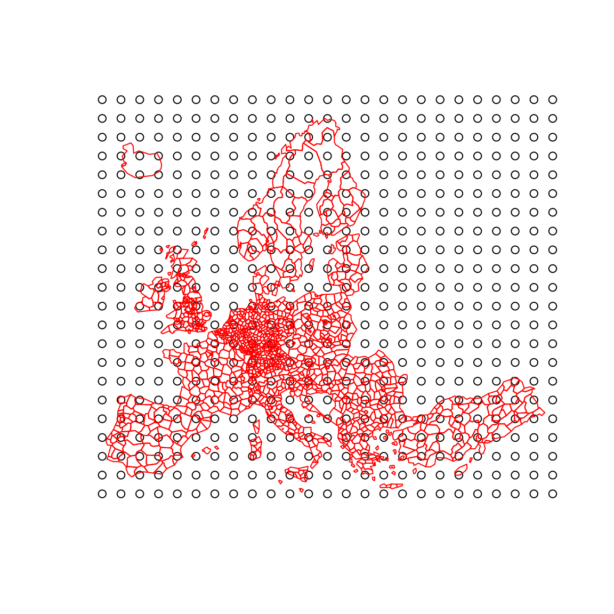

This function creates a regular grid of points from the extent of a given spatial object and a given resolution.
Examples
library(sf)
#> Linking to GEOS 3.13.1, GDAL 3.10.3, PROJ 9.6.0; sf_use_s2() is TRUE
g <- create_grid(x = n3_poly, res = 200000)
plot(st_geometry(g))
plot(st_geometry(n3_poly), border = "red", add = TRUE)
